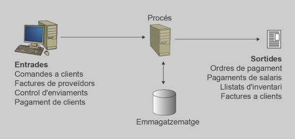
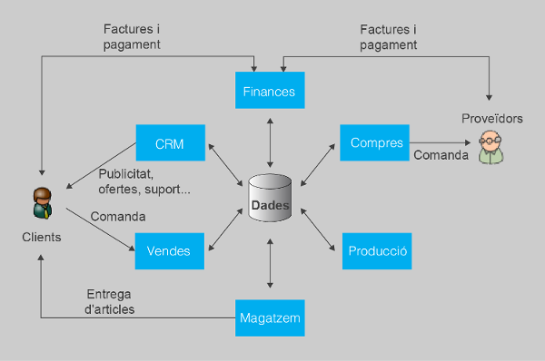
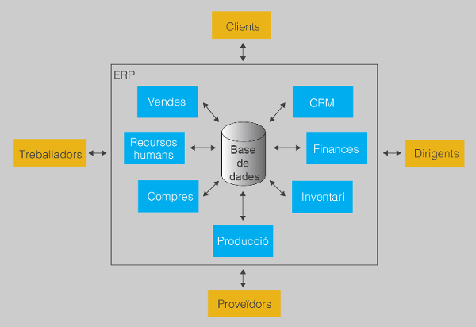
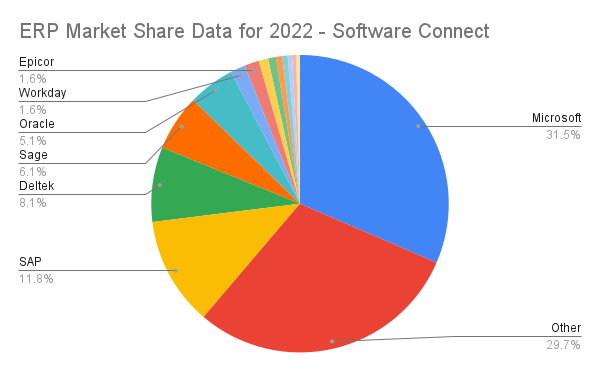
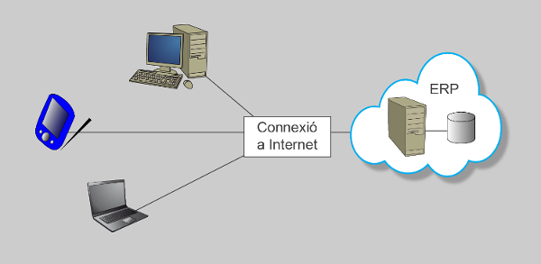

Business information systems¶
Learning outcomes
- Recognize the advantages of enterprise resource planning and management systems.
- Evaluate the characteristics of management systems.
- Install and configure enterprise management applications.
- Establish and verify secure access to information.
- Generate reports.
- Perform integration tasks with office applications.
- Perform information extraction procedures for processing and incorporation into various systems.
- Perform assistance and incident resolution tasks.
- Prepare documents related to the operation of the application.
Assessment criteria
- The advantages of enterprise resource planning and management systems have been recognized.
- The characteristics of the main enterprise management applications have been evaluated.
- Enterprise management applications have been installed.
- The applications have been configured and adapted.
- Secure access to information has been established and verified.
- Reports have been generated.
- Integration tasks with office applications have been performed.
- Information extraction procedures for processing and incorporation into various systems have been completed.
- Assistance and incident resolution tasks have been performed.
- Documents related to the operation of the application have been prepared.
Basic goals¶
Computers were first used to help companies work faster. Nowadays, they are very important for many companies. There are two main reasons why companies use computers:
- To help workers do their jobs more easily.
- To help leaders make decisions.
Companies often decide if a computer system is successful or not by looking at how well it helps workers and leaders.
Decision-making¶
In many organizations, one of the most important goals is to gain and maintain a competitive advantage. This advantage helps them to succeed for a long time. To achieve this, companies need to make decisions quickly and effectively. They may need to invest money, increase production or hire more staff. However, making the right decision quickly can be difficult.
Computer systems are a valuable tool for organizations because they help decision-makers to use data to make informed choices. There are two types of data: internal data, which is generated by the company itself, and environmental data, which includes information about the market, competitors, and regulations.
The problem is that there is a lot of data available, and not all of it is relevant to the company's goals. Sorting through this data can be expensive in terms of resources and personnel.
Computer systems help to organize and classify data so that decision-makers can quickly and easily find the information they need. This allows organizations to make informed decisions that give them a competitive advantage.
Make tasks easier¶
The use of computers has made it much easier for workers to carry out their tasks, especially in the process of company transactions. This process includes routine tasks like stock control, preparing delivery notes, creating invoices, and accounting. Before computers were used, these tasks required a lot of resources, such as a large number of employees and data storage.

Computerization has made these processes much more efficient, which has resulted in many benefits for companies. They are faster, use fewer resources, and are less prone to errors. This has helped companies reduce costs and provide better service. In fact, computerized transaction processes are now used in almost every company.
Business software¶
Business software refers to computer programs and applications that are designed to assist businesses in managing various aspects of their operations. There are various types of applications that can be used in companies, ranging from office programs to specialized programs for a particular sector.
One way to classify business software is based on how it is created. The following categories are commonly used:
- Generic applications: These are standard programs that can be used by any type of company, such as Microsoft Office or Google Suite.
- Custom software: This type of software is designed specifically for a company's needs and requirements.
- Standard software: These are pre-designed software packages that meet the needs of a particular industry, such as accounting software for small businesses or project management software for construction companies.
- ERP (Enterprise Resource Planning) software: This type of software integrates all aspects of a company's operations into a single system, including accounting, human resources, inventory management, and customer relationship management.
Generally, larger companies have more control over all aspects of their business and may use more customized or integrated software systems, while smaller companies may opt for more affordable software options with similar functions.
Generic applications¶
In addition to specialized business software, companies also use other types of programs that are not specifically designed for managing their operations. These programs include office applications like Microsoft Word, web browsers such as Google Chrome, and email programs like Microsoft Outlook.
Although these programs are not created specifically for business management, they can still be very useful in certain situations. For example, web browsers are necessary for accessing certain online services, and data exported from other programs can often be analyzed in office applications like Microsoft Excel.
Even very small companies can benefit from using generic programs like office applications to help manage their business activities in a simple and cost-effective way.
Custom software¶
In the past, it was common for companies to create their own computer systems by developing a program that would fit their specific needs. This process, known as tailoring software, involved hiring computer scientists to develop a program that would computerize the company's activities. Since these programs were custom-made for the organization, they were perfectly adapted to its unique requirements.
However, there were several problems associated with this approach:
- The company's operations had to be carefully analyzed to ensure that the program was a perfect fit.
- The implementation process was time-consuming and prone to errors, as the program had not been tested before.
- These programs were so specific to the company that any changes in its operations usually required changes to the software as well. This made it very expensive to maintain this type of software.
Standard software¶
Standard Business Management Software is software that is specifically developed to work in most organizations. This software is designed to perform specific tasks in a generic company or a particular sector. The advantage of this type of software is that it greatly reduces costs since the software is already developed and tested. The implementation time is also reduced, as it is generally enough to enter the data and start working.
However, there are disadvantages to this software, as all the functions are designed to work "anywhere" and do not usually adapt perfectly to the specific needs of any company. Sometimes the company has to adapt to the operation of the program instead of the other way around. Moreover, having software from different companies can cause problems, such as "computer islands," where different departments have their own data and only share part of it with the rest of the company.
It is important to note that programs are not perfect, and problems may arise, evolve, and new versions may come out. An update of any of the programs may cause problems to exchange data with other programs, which may do tasks differently.
Despite these disadvantages, standard software is a valid option for the management of many small and medium-sized businesses.
ERP (Enterprise Resource Planning)¶
ERPs have become a popular choice for businesses because they provide a single platform for managing different processes, which simplifies communication between departments and helps streamline operations. ERPs are modular and can be adapted to suit the specific needs of a company. They integrate all areas and procedures of a company into a single application, providing a global view of the business. ERPs are designed to interact with general-purpose applications such as browsers and email programs, and they can be accessed through web browsers. ERPs simplify communications between processes by allowing modules to communicate with a common data source.

ERP Characteristics¶
Simplifying a lot we can say that an ERP consists of two basic components:
- A centralized database.
- A group of modules or applications.
Basic scheme of an ERP 
A centralized database¶
The ERPs work with a centralized database in which all programs interact so that the data is only stored once and there is never disintegrated data.
This central data repository guarantees that since the information is at one point, at any time an image of the state in which the company is located can be obtained. This eliminates the possibility of creating "computer islands".
It also minimizes the exchange of information between departments and the possibility that someone will work with outdated data as the information is the same for everyone.
Modules¶
Modules are a set of applications that can be integrated to form the software system. It is quite common for each of these modules to coincide with the functional units of the company (purchases, sales, inventory, finance...).
Therefore, one of the great advantages of ERPs with respect to other systems is that with a single program all the management of the company is integrated. This brings associated advantages:
- Learning time is reduced because you do not need to learn how different environments work, because it is the same in all programs.
- The system can be adapted to the needs of each moment of the company, adding new modules to do new tasks or changing the way the installed modules work.
All modules share the information they generate with the other modules so that at any point reliable and truthful information can be obtained.
Disadvantages¶
Not everything is advantages in ERPs; They also have some disadvantages.
One problem is that it can be hard to get the ERP set up in a company. Everyone in the company needs to be involved and sometimes people in different departments resist the change. Also, the company may need to change the way it does things to fit with the ERP, which can take a long time.
There are other things that can also make the process take longer. Sometimes the data from the old system doesn't fit into the new ERP, some people don't want to learn the new tools, and some people don't like change.
Another problem is that the company becomes dependent on one software provider for the ERP. This means the company has to pay for the software and any updates or fixes. It can be expensive.
Overall, ERPs are helpful, but they may not be a good fit for companies that change a lot or are spread out over many locations.
Types of ERP¶
There are two main types of ERPs: horizontal and vertical.
A horizontal ERP is a general-purpose software that can be used in any company, regardless of the industry. It includes standard features such as inventory control, purchasing, sales, and finances.
A vertical ERP, on the other hand, is designed for a specific industry or business sector. It includes all the features of a horizontal ERP, as well as additional features that are tailored to the needs of a particular industry.
There are many ERP products available in the market, including those offered by large companies like SAP AG, Oracle, and Microsoft. However, there are also many other solutions, such as those provided by SAGE, Epicor, Infor, or Acumatica. It is important to choose the right ERP for a company to ensure its successful implementation.

Open source ERP¶
Also in the world of free software you can find ERP software, whose manufacturers often achieve income through the supply of customer services.
Among the open source ERP programs are:
- Odoo (formerly OpenERP) - Odoo S.A.
- ERPNext - Frappe Technologies Pvt. Ltd.
- Dolibarr - Dolibarr ERP/CRM project team
- Apache OFBiz - The Apache Software Foundation
- Compiere - Aptean
Open source ERPs offer several advantages that must be considered when deciding whether or not to implement them:
- The most significant advantage is the cost. Open source ERPs can be obtained at no cost, which reduces implementation costs and user licences.
- There is no dependence on a software vendor because the company controls the software and can use it to create its own ERP with fewer resources than required in a paid system.
- With access to the code, the program can be customized to meet the specific needs of the company. Payment solutions allow for customization, but there are often limitations. Open source systems have no such limitations.
However, free software is not without its challenges, which prevent some companies from using it:
- Program operation documentation may not always be available, which can increase learning time.
- Software updates are often unpredictable and changes are not always documented.
- Projects sometimes disappear, which can force the company to change products.
- Although almost all of them offer a free product with a paid version that includes support, support may not be as good as that offered by proprietary software.
Open source ERPs are a valid alternative and should be considered when choosing the most suitable ERP for the company, taking into account both their strengths and weaknesses.
Cloud computing¶
Most of these ERPs are adapting or already adapted to be able to function in what is known as cloud computing or more specifically as SAAAS (software as a service).
The idea is to not have to make any software installation on the company's servers but to access the program online, usually with a web browser. This allows the installation and maintenance tasks to be externalized, as it is the supplier that will be in charge.

This feature allows:
- Use the program without having to install any software as this software is installed on the seller's servers.
- That is not necessary for the company make any expenditure on hardware infrastructure (you do not need to buy a server, implement backup mechanisms ...) or in qualified computer staff. A computer and an internet connection are enough to work with the ERP.
Generally the cost of this type of service is paid via subscription, which implies a much lower price than what is requested to buy the software package and the rent of the technicians responsible for the installation.
It works in this way that the software is always updated as the developer company is in charge of it on its own servers. You do not need to take risks or have extra expenses doing updates on its servers.
But it must always be taken into account that working in this way involves risks:
- It requires that there is a permanent connection on the Internet and therefore the company of the telephone company makes more dependent.
- A failure on the servers of the hostel company can completely stop the operation of the company as the program that manages everything cannot be accessed.
- Because the data is stored in a remote place, in case of problems it is not possible to recover them.
In addition, the use of cloud services can lead to legal problems as the data ceases to be stored in the company to become on the supplier's servers, and sometimes these suppliers are not in The same country in which the company works.
Therefore, the Personal Data Protection Law (LOPD) can be violated due to the limitations imposed on the storage location, since among the data with which the company works on it is usually personal.
Data protection matters
The LOPD defines among other things in which cases you can afford a third party accessing an organization's data or what conditions must be fulfilled to move data from one country to another.
This requires, before contracting a cloud service, to ensure that the service provider company guarantees that the data that will be stored on its servers will be saved without violating the law.
Implantation of an ERP¶
ERPs are complex programs of implantation, and it is not uncommon for implantation to a company to become a failure.
Reasons why ERP implantations can fail:
- Takes longer or costs more than expected to implement a solution.
- Solution doesn't work as it should.
- Solution is too complicated or there is no confidence in the data obtained.
- Change resistance. People tend, naturally, to resist change, especially when it comes to changing established processes, routines, and ways of working.
Something we have to bear in mind when choosing and implementing an ERP:
- Before choosing an ERP, identify the company's specific needs.
- Proper choice of ERP is a determining factor for success.
- ERPs require time for parameterization and modification before use.
- It is rare that nothing needs to be modified in an ERP.
- Involving all areas of the business and addressing user resistance are key factors for success.
- Adaptation time varies depending on the chosen ERP, modules to be implemented, and size of the company.
- Modular implementation is often more successful than sudden implementation.
- Transfer of data can be a complex task.
Factors affecting the success of ERP implementation:
- Choice of a good integrative company with experience and ability to understand the company and adapt the tool
- Extending the implantation time can be a factor in failure.
Glossary¶
Here is the glossary of basic terms related to company operations and invoicing:
-
Company: a person, organization, or institution dedicated to activities with the aim of making a profit to meet the needs of goods or services of society.
-
Natural and legal persons:
- Natural person: an individual human being who has rights and can incur obligations. In case of debts, a natural person must respond with their assets. Self-employed individuals, although entrepreneurs, are considered natural persons.
- Legal person: an entity that can acquire rights and incur obligations. In case of debts, a legal person responds with the assets of the entity. Legal persons include corporations, partnerships, foundations, etc.
-
Customers and suppliers:
- Customer: a natural or legal person who acquires a good or service in exchange for money or other goods and services.
- Supplier: a person or company that supplies goods and/or services to other people and/or companies.
-
Employees: a person who provides services to an employer in exchange for a salary. The details of this relationship are defined through a contract.
-
Taxes and duties: a payment obligation made to the State without a direct counterpart of goods or services. VAT: in Spain, Value Added Tax. This tax may vary depending on the type of goods and services or Autonomous Community.
-
Invoices: a commercial document that reflects all the information of a purchase/sale: customer, supplier, delivery date of the product/service, product/service details (including unit prices and total price), moment of accrual (moment in which the tax obligation arises), taxes (such as VAT), etc.
-
Production/manufacturing, production line, and production order:
- Production/manufacturing: the process by which a product is made. This process usually consists of different phases (each with different locations) and some associated elements such as raw materials, energy, and labour.
- Production line: definition of the set of sequential operations and necessary resources to organize the production of a product.
- Production order: the realization of the production of a product, indicating the quantity of the product, production date, and production line used.
-
Logistics, storage, stock/inventory, and distribution:
- Logistics: the coordination, management, and transport processes of commercial goods from the distribution point to the end customer.
- Storage: a process in which the materials necessary for the production process are stored, as well as the stock of items for sale and distribution.
- Stock/Inventory: the set of stocks of items that the company has to trade with and to produce goods and services.
- Distribution: the process by which the company delivers goods and services from the storage location to the end consumer.
Credits and bibliography¶
- SALA, Xavier i MARTÍ, Carles Llenguatges de marques i sistemes de gestió d’informació. Departament d’Ensenyament, 2012
- DAVISON, Russ ERP Market Share, Size, and Trends Report for 2022. Software Connect https://softwareconnect.com/erp/erp-market/